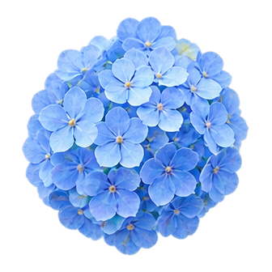
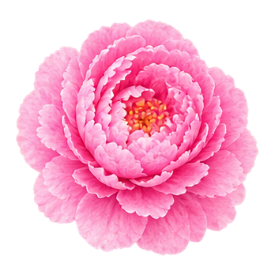

Private Edition · Cairo to Kerala
Aya (Mari) · XXIV
❦
Twenty-Four Chapters of Aya
An Autumn Monograph for Your Twenty-Fourth Year
Twenty-four wax-sealed letters chronicling late-night gaming lobbies, quiet tea rituals, unspoken reassurances, and the golden autumn horizons awaiting you.
Archival Seal Status
Press & hold any wax seal to break it open — 0 of 24 unsealed
00%




Collection Complete
All Twenty-Four Seals Broken
From a random Super Sus lobby to over 22,000 messages across the miles, every chapter is a testament to how rare you are. Your cinematic screening awaits.
Interactive Keepsake
Inscribe Your 24th Year Wish
Write a private wish or intention for your 24th year. Generate an archival gold-stamped Polaroid keepsake to save on your device.